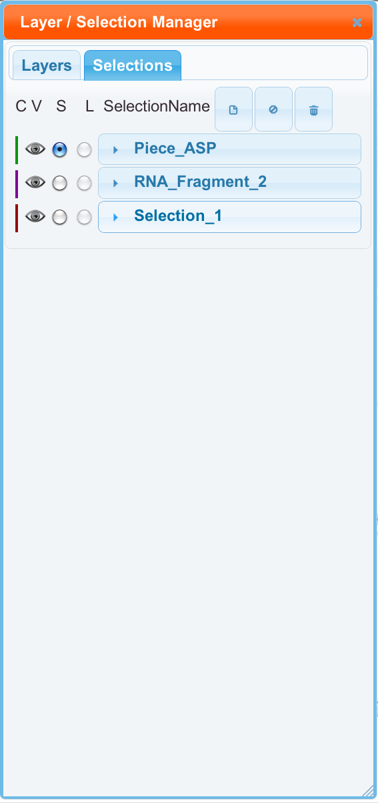

We can have multiple sets of selections. This requires the use of the "Selection Manager". It can be accessed either from the tab inside the "Layer Manager", or from the 2nd toolbar button, with a price tag icon. Selections are organized just like layers. The "Linked" property is currently disabled. However, selections can be created, renamed, deleted, cleared, selected, and reordered, just like layers.
When a selection has it's visible property on, it will show up on the "selected type" layer, wtih a default name of "Selection". The color of these large, unfilled, circles is the same as the color of the selection itself. Selections can be saved and restored. It is possible to have the Jmol show only the rRNA from one selection. To do this, make the desired selection the selected one, and click "Apply Selection 3D", which is located in the "Select" part of the Main Menu.
